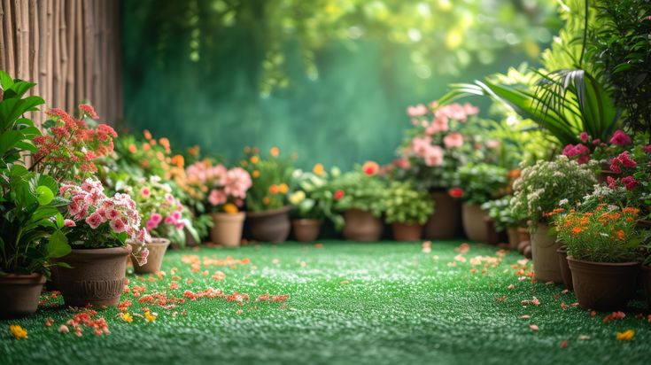
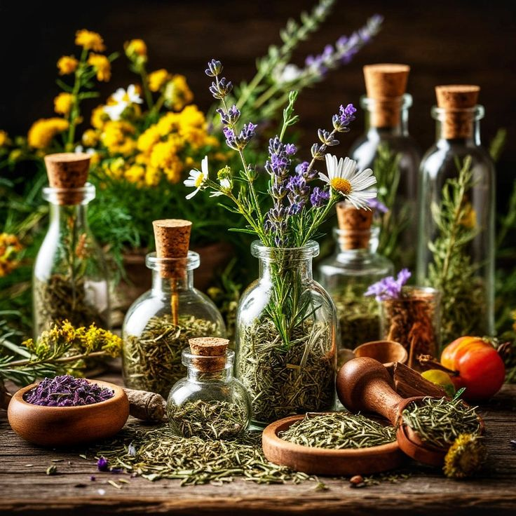
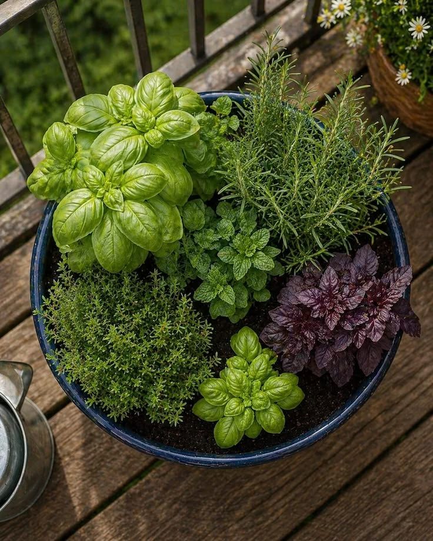
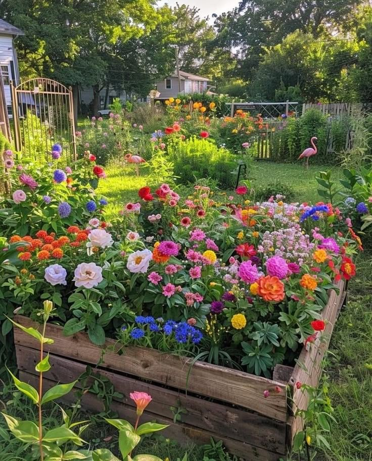
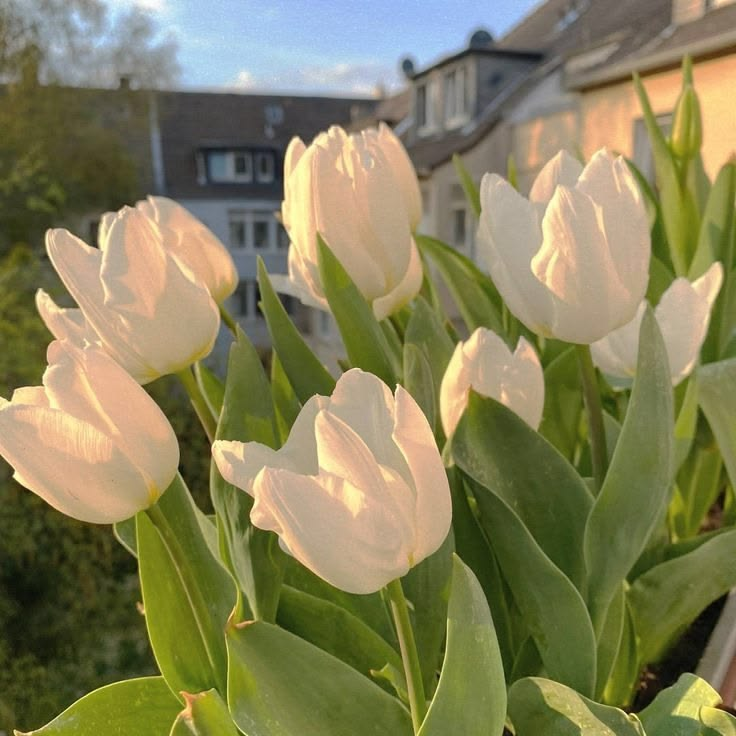
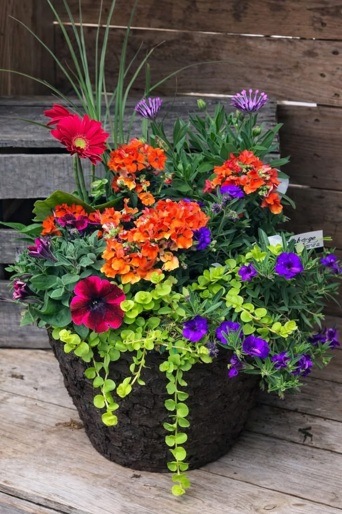
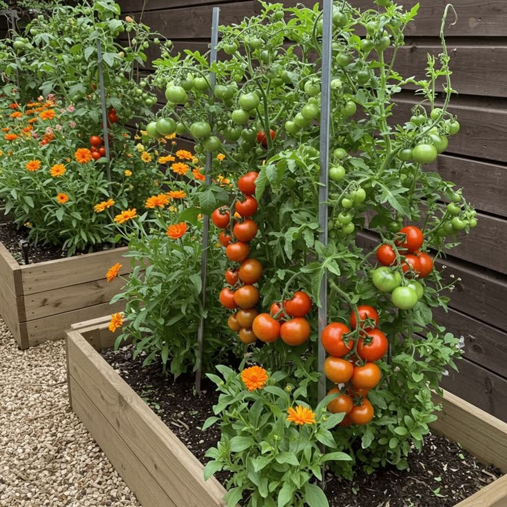
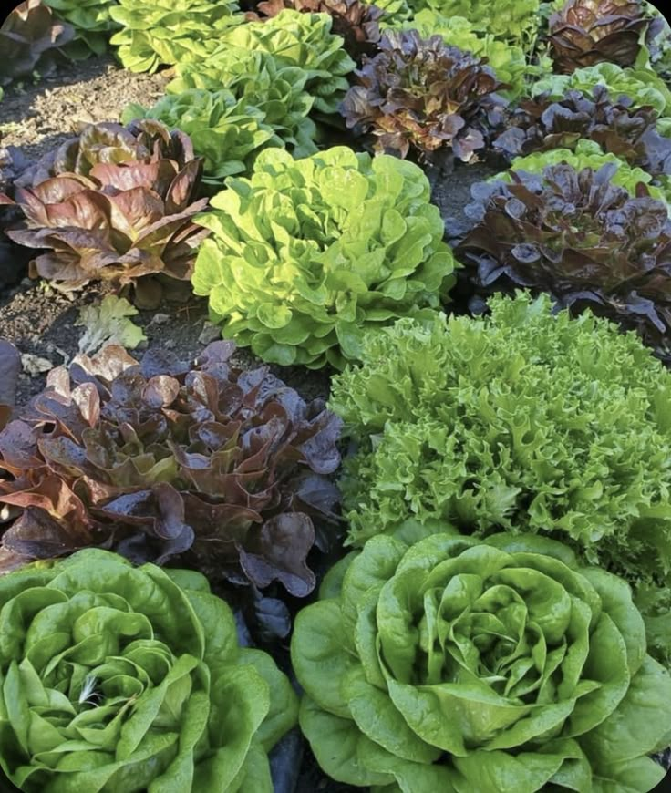
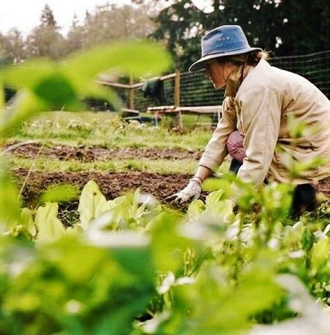

Welcome to the
Flora Residence


Fresh and flavorful herb plants perfect for home gardens, adding natural taste and aroma to your everyday meals

Our herb plants are low-maintenance, space-friendly, and ideal for both beginners and experienced gardeners

Cultivate healthy herb plants at home and enjoy fresh ingredients for cooking, tea, and natural remedies.

Easy-to-grow herb plants that bring freshness, beauty, and wellness benefits right to your doorstep.

Enhance your garden with aromatic herb plants that provide year-round greenery and practical everyday use.

Brighten your garden with colorful flower plants that add beauty and freshness to every corner

Grow stunning flower plants and enjoy vibrant blooms that create a cheerful atmosphere.

Our flower plants bring natural fragrance, elegance, and charm to your home garden.

Add a splash of color to your outdoor and indoor spaces with beautiful flowering plants.

Easy-to-care flower plants that bloom beautifully and enhance the beauty of your surroundings..

Grow fresh and healthy vegetables at home with our easy-to-maintain vegetable plants

Enjoy nutritious, home-grown produce straight from your garden with our quality vegetable plants

Our vegetable plants help you create a sustainable garden filled with fresh harvests year-round.

Start your kitchen garden today with vegetable plants that are perfect for beginners and experts alike.

Harvest fresh, organic vegetables from your own backyard and enjoy healthier meals every day

